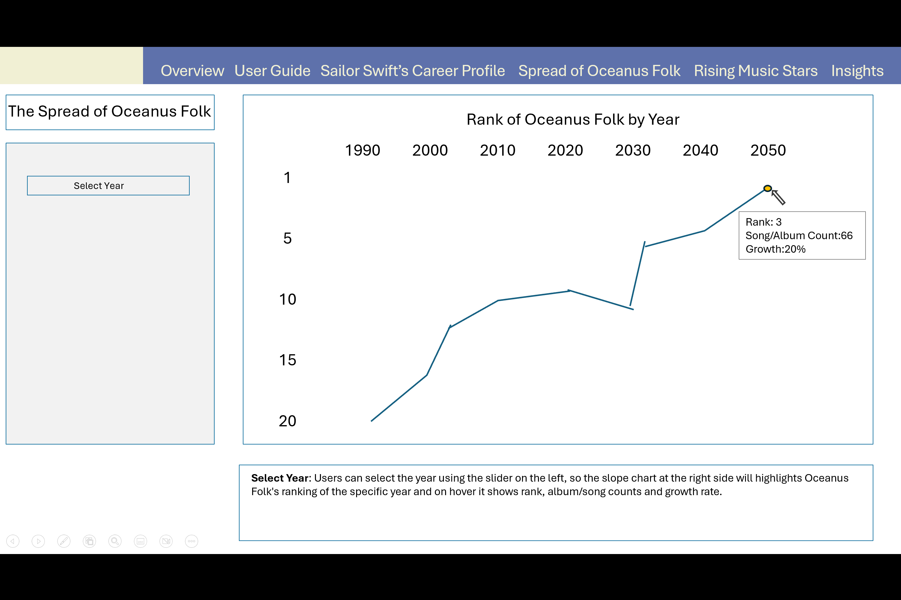
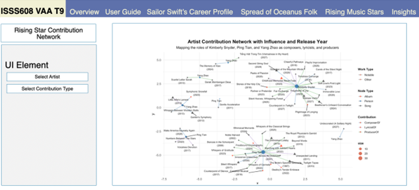

Takehome_Ex03: Storyboard
Introduction
The music industry is constantly evolving, with emerging genres and artists reshaping cultural landscapes. One notable example is the rise of “Oceanus Folk,” a genre popularized by the artist Sailor Shift. Understanding her influence requires examining musical trends, collaboration networks, and the genre’s transformation over time.
Hence, there is a need for analytical tools that allow users to explore Sailor Shift’s career, collaborations, and legacy within the broader Oceanus Folk community. In this project, we propose a data-driven approach using visualizations to uncover key patterns in her artistic journey and forecast future genre developments.
Motivation
Oceanus Folk began as a niche genre tied to the cultural identity of the small island nation of Oceanus. Its unexpected global emergence—catalyzed by Sailor Shift’s meteoric career—offers a rare opportunity to examine the interplay between individual stardom, genre influence, and collaborative networks in music. Understanding how a genre spreads and evolves offers insight not only into musical trends but also into networked cultural transmission.
Methodology
To understand the evolution and influence of Oceanus Folk, particularly through the career of Sailor Shift, our team adopted a modular, data-driven approach. The methodology consists of four key components:
Network Construction: We parsed a JSON-based music knowledge graph into a tidygraph structure, identifying key node types (artists, songs, albums) and edge relationships (e.g., collaboration, influence). This provided the foundational structure for our visual analytics.
Career Profiling: We traced Sailor Shift’s career over time using timeline and slopegraph visualizations to reveal genre transitions and key milestones. This helped surface patterns in her collaborations and viral growth.
Influence Analysis: We extracted subgraphs to study how Sailor influenced and was influenced by others. By filtering specific edge types (e.g., coverof, interpolatesfrom), we mapped both direct and indirect genre diffusion and constructed genre-level Sankey diagrams and network timelines.
Rising Star Detection: Using centrality, clustering, and influence scores, we developed a model to highlight rising artists. We compared their early trajectories with Sailor’s to predict future Oceanus Folk influencers.
Storyboard
Our storyboard is structured into multiple interactive modules. Each module is specifically designed to address a key question that users may have about the Oceanus Folk music community, enabling them to explore Sailor Shift’s influence and the genre’s evolution from various perspectives. These proposed modules together will create a comprehensive, user-driven exploration platform, enabling a deep dive into the artistic and cultural dynamics of the Oceanus Folk genre.
Section 1
The purpose of this module is to explore the individuals who have influenced Sailor Shift throughout her career. The visualization places Sailor at the center, with various edge types connecting her to other artists who may have had an impact on her work. When the user drags Sailor’s node, the connected nodes move along with it. Visually, the extent to which other nodes follow Sailor’s movement may offer an intuitive sense of the strength of their influence on her.
Section 2
The purpose of this module is to examine the individuals and groups that Sailor Shift has influenced through collaboration. The visualization centers on Sailor’s network of creative partnerships, showing how her musical contributions have potentially shaped the work of other artists, albums, groups, and record labels.
By selecting the “Collaboration” view, users can explore Sailor’s direct and indirect collaborators across multiple layers of connection, adjustable by depth. In this example, the depth is set to 2, allowing users to see not only Sailor’s immediate collaborators but also their subsequent partnerships—offering insight into the ripple effects of her influence.
Section 3
The purpose of this module is to explore how Sailor Shift’s influence has extended beyond her immediate circle and into the broader Oceanus Folk community. By selecting the “Community” view, users can examine how artists who have collaborated with Sailor went on to influence or work with others, creating a ripple effect across the network.
In this visualization, Sailor is connected to a cluster of albums and songs through performance edges, indicating her direct involvement. These works, in turn, link to other artists and musical projects—revealing layers of indirect influence. The network is depth-adjustable, and here set to 2, allowing users to trace not only Sailor’s collaborations but also the extended web of creative activity that stems from them.
Section 4

Select Year: Users can select the year using the slider on the left, so the slope chart at the right side will highlight Oceanus Folk’s ranking in the specific year. On hover, it reveals rank, album/song counts, and growth rate.
Section 5
Select Top n Influence Genres: This control allows users to define how many top genres to display, ranked by their level of influence on Oceanus Folk.
Select Influence Type: Users can customize what constitutes “influence,” including collaborations, direct references, covers, and more. Select Year Range: Adjusts the analysis period, letting users explore how genre influence patterns shift over time.
Section 6
Select Year Range: Defines the temporal scope for tracing influence relationships involving Oceanus Folk.
Select Influence Type: Lets users refine the nature of influence to explore, such as cover versions, lyrical references, or collaboration.
Select Genre: By default, the chart displays both genres influencing Oceanus Folk and those influenced by it. Users can filter to focus on specific interaction directions or highlight the most impacted genres.
Section 7

This module allows users to visually explore selected Top 3 Rising Stars’ contribution, specifically through roles such as Composer, Lyricist, and Producer. The graph highlights relationships between artists and their creative outputs (songs and albums).
Section 8
This module is designed to explore how an individual artist’s work influences and is influenced by others, through musical relationships such as sampling, covering, lyrical referencing, etc.
It’s built around one artist at a time and visualizes the network of musical references tied to the works they have performed.
Section 9
This module aims to showcase the song catalog of the next top 3 rising stars, highlighting the number and variety of songs they’ve performed.
It visualizes direct artist-to-song relationships, not broader influence. It’s ideal for understanding what each artist has worked on, not how that work connects to others.